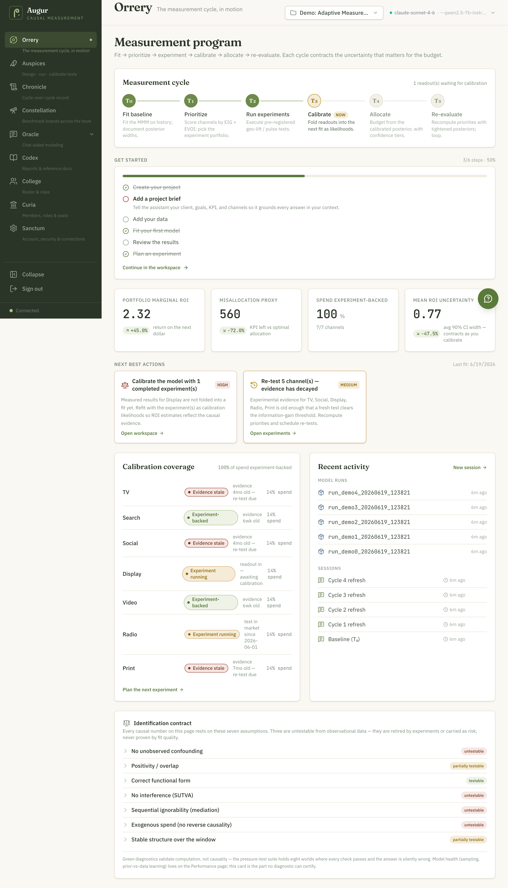
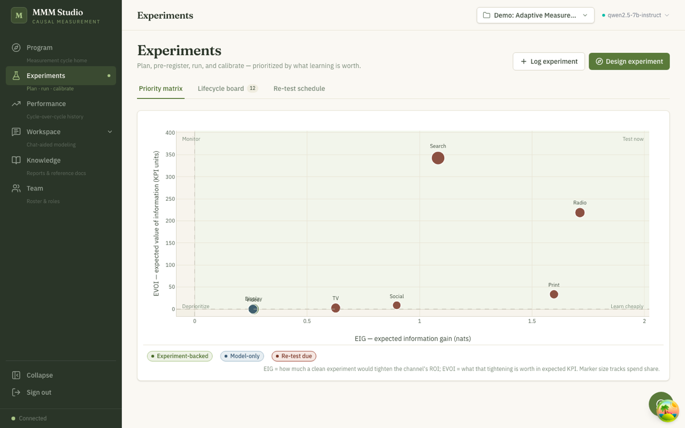
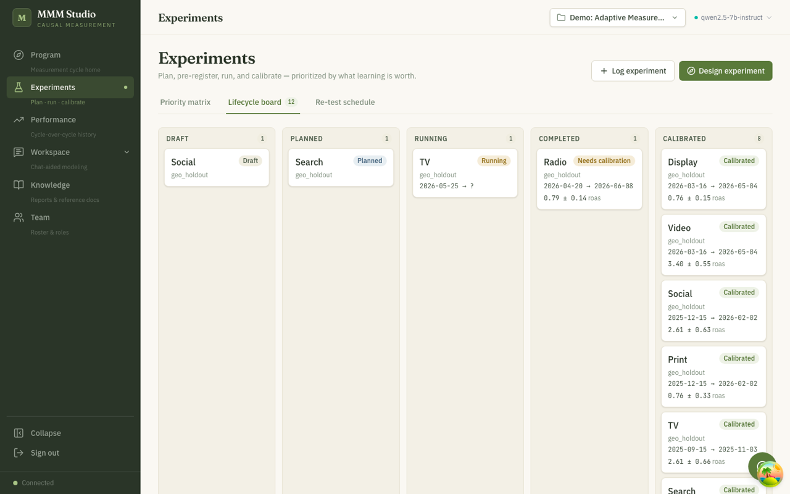
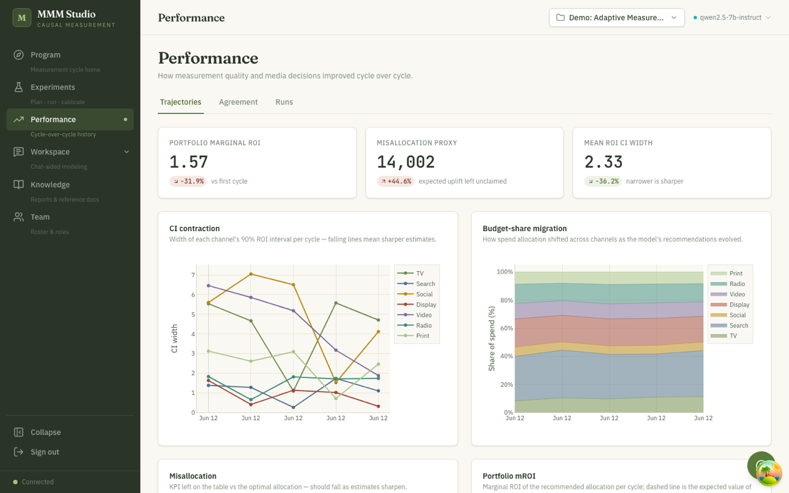
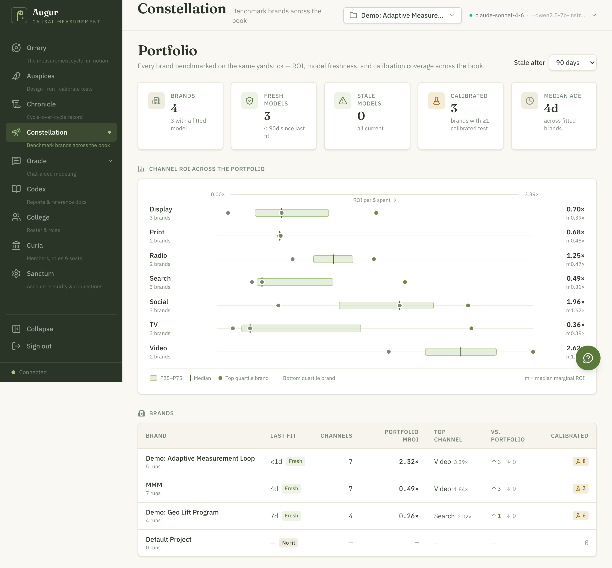
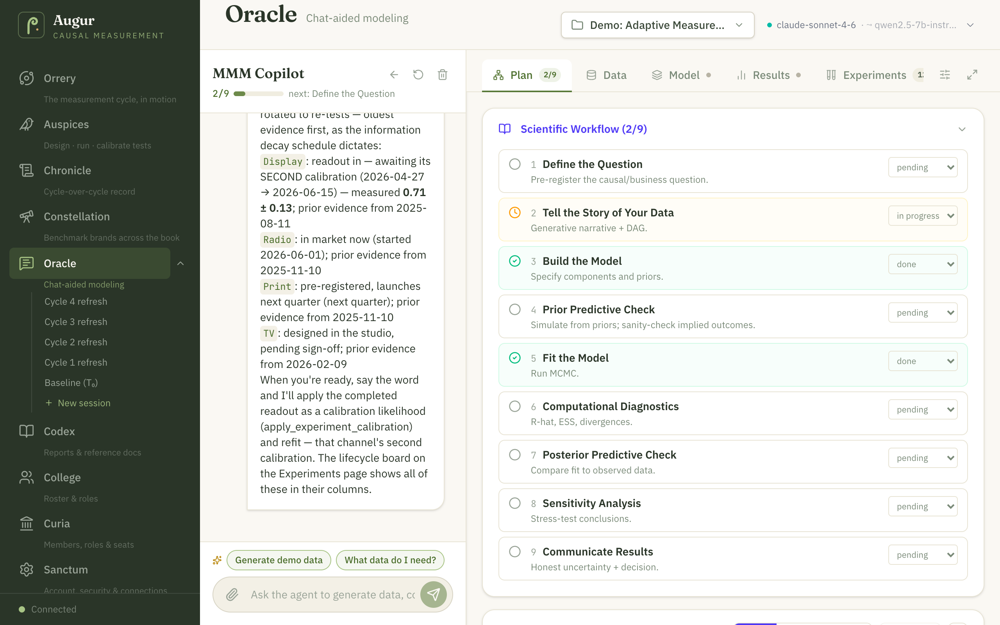

Beta Platform status: the web UI, agent workspace, and planning engine are on the Beta tier — see the Changelog.
Augur is the application layer of the MMM Framework — one place to run the whole measurement loop, from the first data check to calibrated budget decisions. A Roman augur read the signs to decide whether to act before acting; Augur does the same with causal evidence instead of birds. This tour walks each area of the app and shows where every step of the cycle lives.
Measurement in Augur is a loop, not a one-time report: fit the model (T₀) → find where uncertainty is most expensive (T₁: expected information gain and expected value of information, in dollars) → run the experiment that buys the most learning (T₂: pre-registered geo lift, matched-market, or budget-neutral flighting tests) → feed the result back into the model (T₃: calibrated refit) → reallocate budget with the sharper answer (T₄) → re-evaluate as information decays and the market shifts (T₅, then the cycle repeats).
Validate the data and fit the model.
OracleRank where learning is worth the most, in dollars.
AuspicesPre-register and run the highest-value test.
AuspicesFold the readout into the next model fit.
Auspices → OracleMove budget with the sharper answer.
OracleWatch evidence age and schedule re-tests.
ChronicleWhy the loop matters: a marketing mix model answers a causal question — “what would sales have been if we hadn’t run this media?” — not just “what moved together?” Lots of things move together: ice cream sales and sunburns rise in the same weeks without one causing the other, and holiday demand lifts both ad spend and sales at the same time. Augur is built to separate coincidence from contribution: it accounts for confounders like underlying demand, locks the model design in before results are seen, and checks its answers against real-world experiments such as regional holdout tests. Each pass around the loop turns one more guess into an estimate of incremental impact — what your media actually caused.
The loop in depth — including the math behind it — is covered in Measurement & Calibration.
Augur names each page for a piece of the augur’s craft — reading signs to decide before committing. The name is on the door; the job is in plain language underneath it. Here is the whole map, in the order the loop runs.
Home base — the T₀–T₅ measurement cycle, KPIs, and what the program needs next.
“Bird-watching”: take the omens — design, pre-register, run, and calibrate tests.
The instrument you re-sight every wave: continuous learning programs that steer spend between full fits.
The cycle-over-cycle record of how measurement sharpened and decisions improved.
The forward calendar of when to act: budget allocation, flighting, and what-if scenarios.
Every brand benchmarked on the same yardstick across the book of business.
Ask questions, get answers: the chat-aided modeling workspace that does the work.
The workshop: author, prove, and publish bespoke models to the shared Model Garden the agent can run.
The bound reference: briefs, reports, and grounding docs the copilot can cite.
The College of Augurs: the people on the program, and their roles.
The senate-house: org governance — members, roles, and seats. Admins only.
Your private space: account, security, the model the agent runs on, and data connections.
One color language runs through every page — the priority matrix, the coverage map, the lifecycle board, the portfolio. It encodes how much you can trust a channel’s number:
The measurement cycle, in motion.
Orrery is home base — the page you open Monday morning. A stage ring shows where your program sits in the T₀–T₅ cycle (and why), headline KPIs summarize the current model’s view of the business — portfolio marginal ROI, a misallocation proxy, share of spend that is experiment-backed, and mean ROI uncertainty — each with a cycle-over-cycle delta. A next-best-actions list tells you what the program needs next: a calibrated refit, a re-test, a data refresh. A calibration coverage map shows which channels have been validated by experiments and which still rest on observational evidence alone — like an account review that flags which line items have receipts — and an activity log keeps the recent history of fits, tests, and decisions in one place.

Design · run · calibrate tests — take the omens before committing budget.
Auspices is where Augur spends your research budget wisely. A priority matrix ranks channels by how much an experiment would teach you (expected information gain) and what that learning is worth in dollars (expected value of information) — a research budget for your media plan, spent exactly where it changes the next decision most. A lifecycle board tracks each test from draft → planned → running → completed → calibrated, so every experiment is pre-registered before results are seen and folded into the model after. A re-test schedule flags evidence that is going stale as markets shift.
The Design experiment studio drafts a concrete, runnable plan for you. Three designs are offered: randomized matched-pair geo lift (markets matched on residual co-movement and covariates, power calibrated by placebo simulation), matched-market difference-in-differences, and budget-neutral randomized flighting for national data where geo splits aren’t available. It can anchor the design to your fitted model — incremental-ROAS expectations, opportunity cost, and a powered/underpowered verdict — and trace a Pareto front of designs trading minimum detectable effect, power, short-term cost, and duration.


EIG uses the closed form 0.5·ln(1 + σ²post/σ²exp) — the current posterior variance acts as the prior for the next experiment; EVOI is the preposterior dollar value of deciding the budget with versus without the experiment, with EVPI as the perfect-information upper bound. Priority is the geometric mean of normalized EIG×EVOI. Information decays as σ²eff(t) = σ²post·eλt; the default decay assumptions set λ to half-lives of ~26 weeks for fast-moving digital (search, display) and ~52 weeks for broadcast and brand media (TV, radio, video)—configurable modeling priors, not empirical industry estimates. Deciding which experiment to run is worked through in the calibration-decisions workshop.
Continuous learning programs — steer spend between full fits.
Sextant is for the situation the classic loop can’t start from: no usable history to fit a model on, or a program that needs to keep learning between full model fits. A learning program runs the measurement rhythm model-free — it designs a wave of geo experiments (each geo cell holds a deliberate spend variation, including shut-off cells that separate channel effects from their interactions), reads the results, and updates a Bayesian picture of how spend drives outcome for every channel at once, including cross-channel synergies and cannibalization. Each wave the picture sharpens; the program re-sights and recommends where the next dollar goes.
The page shows the program’s state plainly: a wave timeline of what has run, a funding line that gives each channel a FUND / HOLD / CUT verdict from the probability its marginal return clears break-even, a synergy heatmap of the channel interactions the designs have identified, and a recommended allocation with uncertainty. An expected-net-benefit card answers the meta-question — is another wave worth its cost? — so the program also knows when to stop. A design studio drafts the next wave (with an option to let the optimizer pick the design that buys the most decision value), and past experiments you already ran can be imported so the program starts from what you know instead of from zero.
Under the hood this is Bayesian optimal experiment design on a shared response surface: a Hill-saturation response per channel plus pairwise interaction terms, fit by NUTS (NumPyro), with central-composite designs for identification, Thompson sampling for allocation, a marginal-ROAS funding line, and an expected-net-benefit-of-sampling stopping rule. The full treatment — including what happens when the assumed response family is wrong — is in the continuous learning guide and its math companion.
The cycle-over-cycle record.
Chronicle is the program’s scorecard across cycles. Trajectories show how channel estimates have moved and tightened from one fit to the next — uncertainty should narrow as experiments land, and budget share should migrate toward the better-evidenced channels. An Estimands tab groups every fitted model by the quantity it measures (estimand × KPI) — contribution ROI, marginal ROAS, incremental contribution — so different models answering the same question line up side by side. A Saturation & ROAS tab plots response curves and return-on-ad-spend over time; the Agreement log is the honesty check, recording side by side what the model predicted and what each real-world test measured, like comparing the recipe to the taste test. A Model health tab carries the sampler diagnostics (R̂, effective sample size, divergences) and prior→posterior learning verdicts, and a Runs timeline keeps every model fit on the record — with a delta view for comparing any two runs.

Allocate budget · plan flights · run what-ifs.
Almanac is the planner’s desk — where the model’s answer becomes a plan you can hand to a media team. The optimizer reads the project’s latest fit and proposes the allocation that maximizes expected outcome for a total budget, honoring per-channel constraints (floors, caps, locked channels) so the plan respects contracts and commitments, not just the math. Optionally it splits the plan by geography and lays it onto a forward flighting calendar — which weeks each channel spends, at what level. A what-if studio answers the meeting question — “what happens if we cut TV 20%?” — with posterior uncertainty on the answer, not a single guaranteed number.
Plans persist: save a plan, reload it, compare candidates side by side, and export the winner as an executable CSV flight plan. The allocation also flows into the client report, so the deliverable and the plan can’t drift apart.
Benchmark every brand across the book.
Constellation puts every brand on the same yardstick. Governance tiles count the book at a glance — brands with a fitted model, how many are fresh versus stale, how many carry at least one calibrated test, the median model age. A channel-ROI benchmark shows the distribution of each channel’s return across brands, so an outlier brand stands out against its peers rather than against nothing. A brands table ranks the whole portfolio on last fit, channels, portfolio marginal ROI, top channel, and calibration coverage — the cross-account view a measurement lead needs to see where evidence is strong and where it is thin.

Chat-aided modeling — ask questions, get answers.
Oracle is a chat with an analyst that does the work as you talk — with plan, data, model, results, validation, experiments, and library tabs alongside the conversation, all sharing one session. Ask it to check a new dataset and it validates the data, runs exploratory analysis, and flags outliers with suggested treatments; or skip the chat entirely and open the Data Studio from the Data tab — upload a raw file, explore it with interactive EDA (distributions, correlation, missingness, outliers), build a replayable cleaning pipeline step by step, and commit the result as the session’s working dataset. Ask it to fit a model and it configures and fits one, then walks you through ROI, the revenue decomposition, and saturation curves. Ask “where should the next dollar go?” and it runs the budget optimizer, marginal analysis, or a what-if budget scenario. It also plans experiments end to end — computing priorities, recommending lift tests, drafting designs, pre-registering plans, recording readouts, and applying the calibration to the next fit. A scientific-workflow checklist keeps the process honest, from define the question through communicate results.
Trust gets its own surface. The Validation tab runs a one-click battery against the fitted model — convergence, prior→posterior learning, posterior-predictive checks, and Simulation-Based Calibration, the check that verifies the model’s uncertainty statements are themselves honest. And before a big readout goes to a client, you can convene a review panel: three personas — a statistician, a media planner, and a CMO — each interrogate the results from their own seat and file their objections, so the weaknesses surface in rehearsal rather than in the room.
Two things set it apart from a generic chatbot. First, it can practice on synthetic worlds with known ground truth — simulated markets where the true ROI is on file — including scenarios that deliberately break naive models (hidden confounders, multicollinearity, mis-specified saturation, trend breaks, geo panels), so you can see how the method behaves before trusting it on your data. Second, its Python runs in a managed kernel — in hosted deployments, a sandboxed and isolated one — with code, outputs, and saved snippets collected in the Library tab, and tabular results rendering as sortable dashboard tables rather than walls of text. When the analysis is done, it generates branded HTML client reports in your colors.

The tool names, for the curious: validate_data, run_eda, detect_outliers, apply_outlier_treatment; generate_synthetic_data (scenarios including realistic, clean, unobserved_confounding, multicollinearity, saturation_misspec, trend_break, and geo panels); configure_model and fit_mmm_model; get_roi_metrics, get_component_decomposition, get_saturation_curves, run_budget_optimizer, run_marginal_analysis, run_budget_scenario; experiment planning via compute_experiment_priorities, recommend_lift_experiments, design_experiment_plan, suggest_experiment, plan_experiment, preregister_experiment, record_experiment_readout, apply_experiment_calibration; validation via validate_model, run_calibration_check (SBC), and convene_review_panel; generate_client_report for the branded deliverable; and execute_python with show_table for sandboxed analysis. Reading the outputs is covered in Interpreting Results.
The workshop — author, prove, and publish bespoke models the agent can run.
Oracle runs the model; the Atelier is where new models are made. Most bespoke marketing-science work dies in a notebook — a methodologist hand-rolls a clever model, it answers one question once, and no one else can safely reuse it. The Atelier is the in-app studio that fixes that: write a custom Bayesian model, prove it against an oracle compatibility suite, document it, and publish it to a governed, versioned library shared across your organization — the Model Garden. Once published, a custom model is no different from a built-in one: any analyst can fit it on their own data through the same Oracle agent, read it with the same estimands, and drop it into the same reports — without ever opening Python. Authors ship the science; the platform handles the infrastructure.
The studio is laid out like a workbench. On the left is the Garden — every model the organization has, with its version history and lifecycle status. The center holds three tabs: Code (a full editor with framework completions and an inline modeling copilot), Docs (markdown with live preview, so a model carries its own documentation), and Notebook (Jupyter-like cells that run against your live edits on real data — change a prior, re-run the cell, see the new posterior). On the right sit the Compatibility report and an About panel with the model’s class, contract version, and status history. The modeling copilot is a Bayesian-modeling expert grounded in your source: ask it a question and, when the answer comes back as code, drop it straight into the editor; in the notebook, an errored cell offers to diagnose itself and rewrite the failing code.
Trust is the hard part of sharing a model, and the Atelier makes it mechanical. Before a model can be published it must pass a compatibility suite — nine tiers run on synthetic worlds with known ground truth (does it build, does it fit, are its predictions on the right scale, do the agent’s read-ops work, does it recover a planted answer), seven of them required. It is the augur’s discipline turned on the instrument itself: prove the tool reads true before you trust the omens it gives. Each model moves through a deliberate lifecycle — draft → tested → published → deprecated. A clean pass on the required tiers promotes a draft to tested automatically; publishing is always a human decision. Published versions are immutable and their history is append-only, and every fit carries a reference back to the exact model that produced it, so any number traces to its source. Untrusted author code never runs on the host — only inside the sandboxed kernel, during testing and fitting.
The contract is family-aware, so the Garden is not limited to marketing mix. A model declares what it measures — channel ROI and marginal ROAS for an MMM, or latent quantities like factor loadings and class profiles for other families — and the platform realizes those estimands and picks the matching report section. Confirmatory factor analysis and latent-class models already ride the same rails as the built-in MMM. The library compounds: every model an author proves and publishes is one chat turn away from being fitted, interrogated, and reported on by every analyst on every project. The whole authoring-to-publishing story is covered in depth in Model Garden & Atelier.
Using a published model never requires the Atelier at all — it happens in Oracle, in chat. The tool names: list_garden_models finds what the organization has published, load_garden_model stages one into your session, fit_mmm_model fits it on your data, and get_estimands reads its declared quantities (with credible intervals and the probability each effect is positive). The authoring tools — register_garden_model, test_garden_model, publish_garden_model — are analyst- and admin-gated. The full authoring recipe is in Model Garden & Atelier.
The bound reference.
Codex is the project’s shared memory. Upload client briefs, planning decks, and reference documents (txt, markdown, CSV, PDF, Word, Excel), and Augur chunks and embeds them so the Oracle copilot and the project guide retrieve them when they answer — so when you ask “does this plan fit the client’s goals?”, it can quote the brief back rather than guessing. Mark a document as a template and the copilot can reuse its format for the next deliverable. A search box lets you check exactly what the copilot would retrieve for a question. Think of it as the account team’s shared drive, except the analyst has actually read everything in it.
The people who practice, and the senate-house that governs them.
College keeps the people on the record alongside the work. A project roster assigns owner, analyst, and viewer roles, used for attribution and sign-off — so a pre-registered experiment or an approved budget shift carries a name, the way a media plan carries an approver’s signature. These roles are about accountability for decisions, not gatekeeping logins.
Curia is the org governance surface, shown only to admins and owners: invite teammates, manage organization roles, and track seat usage across the account. Where College is about who owns a project, Curia is about who belongs to the organization.
Your private space.
Sanctum is where the account, the model, and the data plumbing live. A profile section holds your identity; a security section manages your password and sign-in; a Model & API section chooses the model the agent runs on (and the provider behind it), and is where the API key is set; and a Data connections section manages connected data sources and the saved connections the program syncs from (the full list of supported sources is in Data Connections). It is the one place to point Augur at a different LLM or a different warehouse without touching a config file.
For the technically curious: Augur’s React interface sits on a FastAPI backend. Model fits and the agent’s Python run inside managed per-session kernels — sandboxed, isolated containers in hosted deployments — so long-running work doesn’t tie up the app and untrusted code never touches the host; no external queue is required. Underneath is the open-source MMM Framework — the Python library (3.12 or newer) documented across this site. Augur is the application; the framework is the library it’s built on, so everything the platform does, you can also script directly. Fitted models serialize to disk, so a fit can be saved, reloaded, and re-analyzed later. The agent’s LLM is your choice of provider: Anthropic, OpenAI, Google (Gemini), Vertex AI (Anthropic and Gemini models via Application Default Credentials), or a local model through LM Studio for fully on-machine use. A legacy Streamlit UI (backed by a separate REST API with Redis/ARQ job queuing) remains available as a secondary surface.
Set up Augur locally, then run your first cycle of the measurement loop.